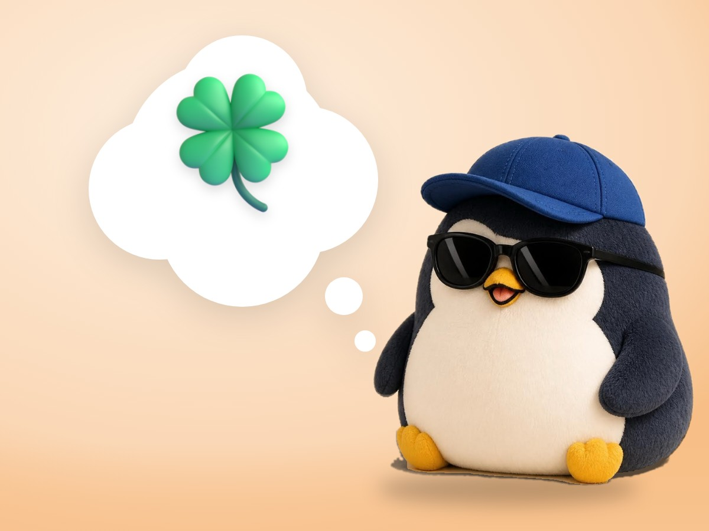

📝 DRAFT · 下書き — まだ本番に出していません · 下書き一覧
🐧 EVERYDAY LIFE⚡ 18 SEC
Lucky people find the good side in anything, even in natto 🍀

Same Luck
A study found that people who feel lucky and people who feel unlucky win lotteries about the same.
The Difference
The difference is a habit of finding the good side.
The Fridge
When you open the fridge, do you think "Only natto…" or "I have natto!"?
⚡ TRY IT
Turn on your "plus eyes"
SCENE 1 / 3
You open the fridge.You walk down a quiet shopping street.Your train is 10 minutes late.
"Only natto… again."
"I have natto! Natto rice is the best."
"All the shops are closed. So sad…"
"The rent here must be cheap! A cafe, maybe?"
"Ugh. 10 minutes lost."
"10 more minutes for my book!"
➖ Minus
➕ Plus
🍀 Lucky eyes:
🌱🌱🌱
The scene does not change. Only your eyes change.
🍀 Lucky eyes 3/3!
The fridge, the street, and the train are the same. Only your day became lucky.
Lucky People
Lucky people are people who find the good side in anything.
📚 I learned this from the Japanese blog "Panda no Ondo".